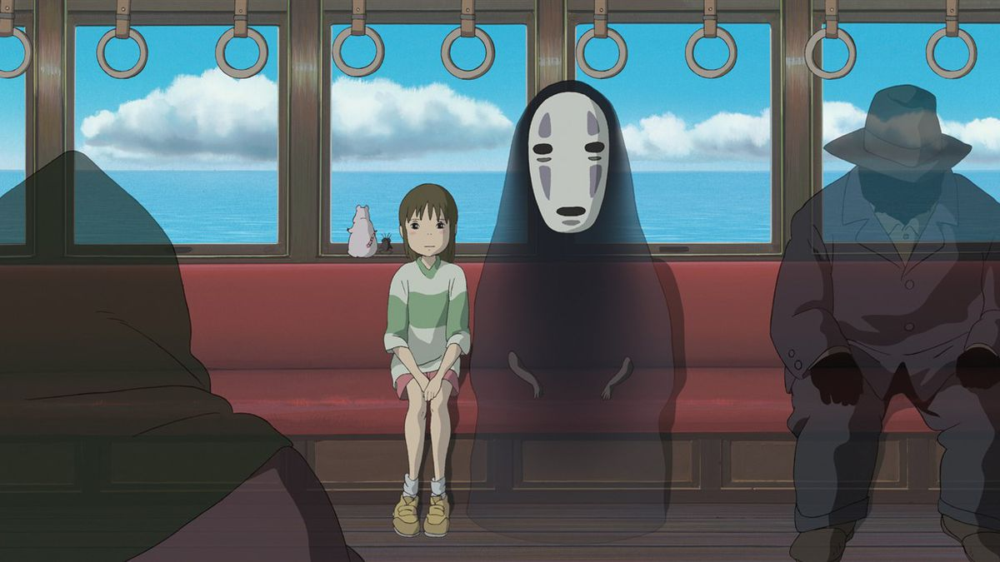

A Viagem de Chihiro
2001 • Dir. Hayao MiyazakiChihiro e seus pais estão se mudando para uma cidade diferente. A caminho da nova casa, o pai decide pegar um atalho e eles acabam descobrindo um mundo mágico governado por deuses e espíritos.